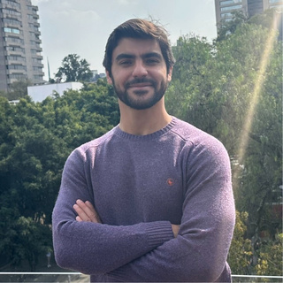

PhD in Education
UNICAF University, Zambia
PhD candidate in Education | IB Diploma Programme and MYP educator. Exploring the intersection of neuroeducation, educational innovation and transformative learning.
Explore my researchORCID profile
Khaled Mabrouk is an educator, author and researcher based in Mexico City. He teaches IB Diploma Programme Global Politics and MYP English language acquisition at Westhill Institute, Santa Fe, and previously coordinated Model United Nations. His career spans primary, secondary and higher education, including online university instruction.
He holds master's degrees in Secondary Education from the University of Alabama and Education Leadership and Management from the University of Derby. He is currently pursuing a PhD in Education at UNICAF University, Zambia. His teaching philosophy emphasizes inquiry, critical thinking, learner agency and evidence-informed educational innovation.
UNICAF University, Zambia
University of Alabama, USA
University of Derby, United Kingdom
Tecnológico de Monterrey, Mexico
Alexandria University, Egypt
Two postgraduate modules in international business law, Aberystwyth University, UK.
My doctoral research explores the implementation of neuroeducation and secondary students’ classroom experiences in science, within the context of ecosystem dynamics, functioning and resilience. The study draws on transformative learning theory and an interpretivist qualitative case study approach.
Mabrouk, K., & Mpofu, P. International Journal of Studies in Psychology, 1(2si), 1–9.
Read publication / DOIObservatory, Institute for the Future of Education, Tecnológico de Monterrey.
Read articleICETOE 2026, Vietnam. Session 3: AI Applications, Learning Analytics and Digital Learning Design.
Conference programmeIFE Conference 2027, Mexico. Accepted for presentation; proceedings publication pending.
Conference contribution, pp. 148–158 (as listed in the résumé).
International ELT conference, Mexico, hosted by ANUPI.
High school IB DP Global Politics teacher and MYP ESL educator; former Model United Nations coordinator. Previously taught English literature.
Adjunct instructor, supporting academic research skills, learning strategies and student success.
Homeroom teacher.
Upper elementary homeroom teacher.
IB Primary Years Programme homeroom teacher.
DP Global Politics, Category 2 (2024); MYP Language Acquisition, Category 2 (2022); Making the PYP Happen, Category 1 (2015).
2026 judge.
View credentialTEFL Org UK, 2013.
OLINMUN teacher-advisor recognition in 2017, 2023 and 2024.
For professional collaboration, educational research and academic opportunities, connect through the profiles below.